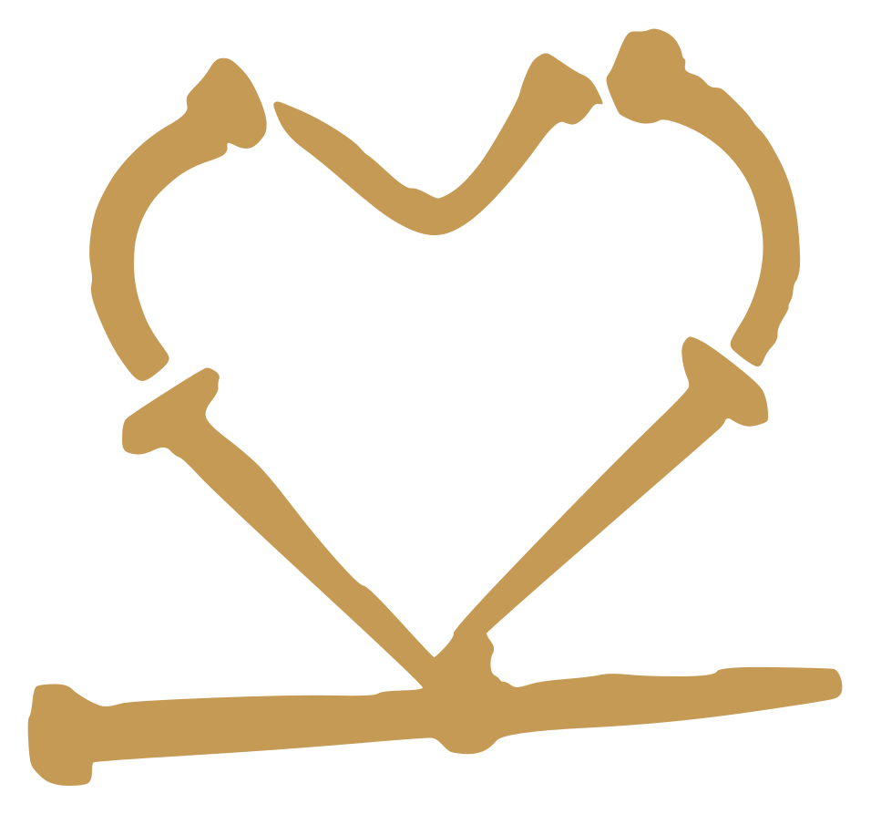

Reclaimed First
We look for existing material before buying new lumber.
Sustainable Woodworking
KB Studio 17 turns reclaimed wood, naturally fallen material, local offcuts, branches, roots, and overlooked pieces into useful, beautiful, one-of-a-kind work.
We look for existing material before buying new lumber.
Usable wood is sourced locally whenever possible, reducing waste and unnecessary transport.
Knots, weathering, roots, burls, and irregular grain are treated as features—not flaws.

The Shop
Each piece is one of a kind. When it sells, it stays here as a record of the work, and you can request something similar.
Local pickup in Aurora, Colorado. Shipping available on request for an additional charge.
Loading the shop…
Reviews
What We Make
Small-batch boards that preserve unique grain and make practical use of quality offcuts.
Rustic pieces made from reclaimed wood, branches, slabs, and found natural material.
Live-edge work, furniture ideas, memorial pieces, and practical builds shaped around available material.
Small Batch by Nature
Working from reclaimed and naturally found materials means availability changes. That limitation is part of the process: each build begins with the material already at hand rather than demanding that nature produce something new.
Ask About a Build